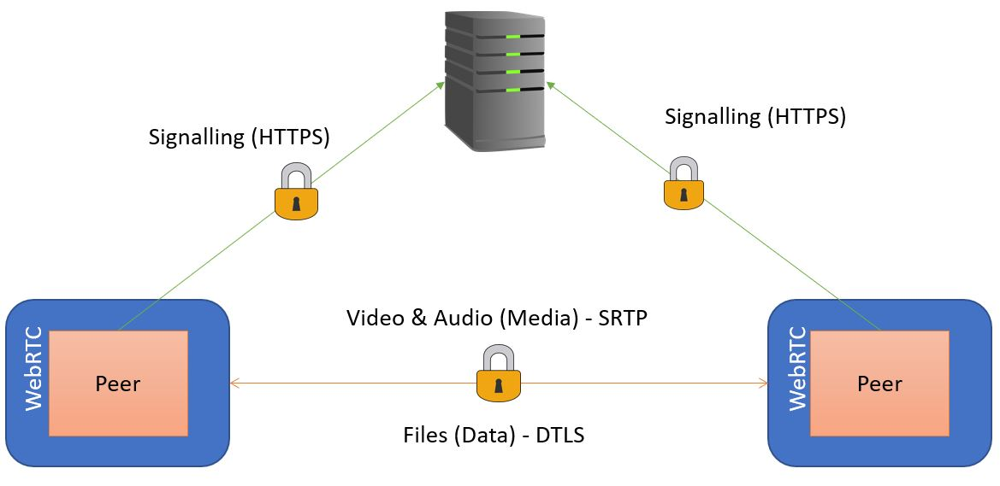

Security risks can always occur in many ways when dealing with transmitting real time data and media. WebRTC differs from this by having security embedded in it from the very beginning. WebRTC is not a plugin and come already embedded in compatible browser such Chrome, Oprah, and Firefox therefore it removes the risk of installing unwanted malware or viruses when downloading third party software online. To be on the safe side, all application that use WebRTC should be used by HTTPS website that are signed by a valid authenticator.
RTC application can impose security threats by not intercepting unencrypting media and/or data being transmitted. Without being encrypted, media and data that’s being transmitted between peers and a peer and sever can be viewed and even manipulated by eavesdropping third-parties. By encrypting the information being transmitted, it makes it practically impossible for third-parties to view the content of encrypted data without the encryption key. In WebRTC, encryption for both media and data is mandatory therefore all the data being sent by WebRTC is being encrypted using standard Advanced Encryption Standard (ASE) encryption. It provided end-to-end encryption between peers blocking out eavesdropping third-parties and severs from decoding data they don’t need to see.
The Datagram Transport Layer Security (DTLS) protocol is used to take care of exchanging keys used to encrypt and decrypt the data flowing to and from both peer. DTLS is already built into the WebRTC compatible browsers and is designed to prevent manipulation to data and third-party eavesdropping. It’s a subset of Transport Layer Security (TLS) modified to be used with User Datagram Protocol (UDP) connections. Once the DTLS has exchanged the first key to be used to encrypt and decrypt the media data, the browser can then start streaming the audio and video over Secure Real-Time Protocol (SRTP).
WebRTC use SRTP to send and received encrypted media data. Throughout the session, DTLS and STRP work closely together to keep the session secure. They do this by DTLS exchanging the key that SRTP uses for encryption and from time to time, SRTP changes the encryption key occasionally therefore DTLS need to update accordingly and will do so as needed by SRTP. SRTP also protects peer’s IP communication from hackers to keep media data is kept private.
Most RTC application that support video and audio conferencing don’t require the user’s permission to access their microphone and camera before communicating. With WebRTC, the user is required to grant access to the media devices before use which provide security for the camera and microphone. Before using the media devices, typically a popup box or a drop-down bar will appear on the user’s browser asking for permission. Below is an image of what it looks like in Firefox.
Each browser has a method and way it manages requesting access to use media devices. For example, Chrome will remember what software or website has been granted access to the media devices for future visits whereas Firefox doesn’t. Firefox requires the user to grant access on every session regardless if the website or software has been used before. To provide even further security, all compatible browsers have stated if a WebRTC call is in process and the browser can’t tell if you’re on a call or not, by default the connection will be dropped and the call will end.
It’s simple to take advantage of security in WebRTC as your application just needs to use HTTPS for its signalling. As long as the signalling goes over a secure conduit, the data will be fully secured as well as using the standard protocols of SRTP for media or DTLS for the data channel.
{kind=link}